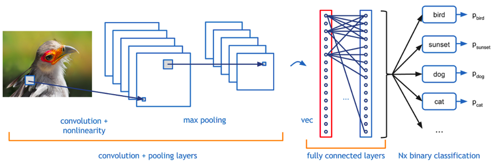
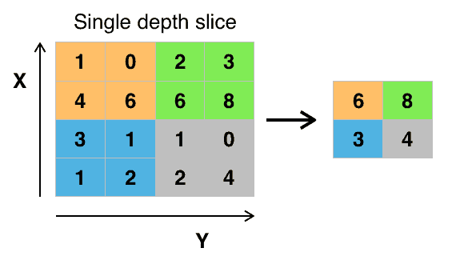

Teoria
Introdução às CNNs¶
O que são Redes Neurais Convolucionais?¶
As Redes Neurais Convolucionais (CNNs) são um tipo de rede neural artificial, projetada para processar dados que possuem uma estrutura topológica similar a uma grade, como:
Aplicações comuns:
- Classificação e segmentação de imagens
- Reconhecimento facial e detecção de objetos
- Análise de sinais e séries temporais
- Bioinformática (motivos em DNA/RNA)
Vantagens sobre MLPs¶
| Aspecto | MLP | CNN |
|---|---|---|
| Parâmetros | Crescem explosivamente | Muito menos (filtros reutilizados) |
| Estrutura espacial | Perdida | Preservada |
| Robustez a deslocamentos | Baixa | Maior (quase invariante a translação) |
| Compartilhamento de pesos | Não | Sim |
| Escalabilidade em visão | Limitada | Alta |
Arquitetura Geral de uma CNN¶

Fundamentos Matemáticos¶
Convolução (Intuição)¶
A convolução mede o alinhamento entre um pequeno padrão (kernel) e regiões da entrada.

Convolução Contínua:
Convolução Discreta (usada em CNNs):
Convolução 2D para Imagens¶
Em visão usamos, tecnicamente, correlação cruzada (não invertendo o kernel), mas chamamos de convolução por convenção.

Onde:
I: Imagem de entradaK: Kernel (filtro)S: Feature map (mapa de características)
Exemplo Prático de Convolução¶
Imagem 5×5:
Kernel 3×3 (Detector de Borda):
Resultado (Feature Map):
Parametros da Camada Convolucional¶
1. Kernel/Filtro¶
- Tamanho: Normalmente 3×3, 5×5, 7×7
- Profundidade do kernel: Igual à profundidade da entrada
- Nº de filtros: Hyperparâmetro (32, 64, 128, 256...)
- Pesos: Aprendidos durante treinamento
2. Stride (Passo)¶
- Definição: Quantos pixels o kernel "pula" a cada operação
- Stride = 1: Sobreposição máxima
- Stride = 2: Reduz dimensão pela metade
3. Padding (Preenchimento)¶
- Valid: Sem padding (saída menor)
- Same: Padding para manter dimensão
- Causal: Para dados sequenciais
Efeito de padding='valid' com kernel 3×3 e stride=1 em H×W?
Principal efeito de stride=2 em convolução?
Tipos de Convoluções¶
Convolução Standard¶
# Exemplo com TensorFlow/Keras
layers.Conv2D(filters=32, kernel_size=(3,3), stride=(1,1), padding='same')
Convolução Depthwise Separable¶
- Vantagem: Menos parâmetros (~9x redução) - Uso: MobileNets, XceptionConvolução Dilatada (Atrous)¶
- Vantagem: Campo receptivo maior sem perder resolução - Uso: Segmentação semânticaConvolução Transposta (Deconvolução)¶
- Uso: Upsampling, GANs, AutoencodersVisualização da Convolução¶
CNN – Convolução, Ativação e Pooling (interativo)
Pooling e Subsampling¶

Diminui tamanho dos feature maps alem de permitir que pequenas translações não afetem resultado, ajuda na redução de overfitting e acelera o processamento.
Max Pooling¶

Mantém o valor mais forte (presença de padrão).Average Pooling¶
Suaviza (média local), diluindo picos.
Global Average Pooling¶
Resume cada feature map em um único número. Substitui densas finais, reduz parâmetros.
Diferença essencial Max vs Average Pooling?
Batch Normalization¶

A Batch Normalization é uma técnica que normaliza as ativações de uma camada, mantendo a média próxima de 0 e o desvio padrão próximo de 1.
- Acelera o treinamento
- Reduz a sensibilidade à inicialização dos pesos
- Permite usar taxas de aprendizado maiores
- Atua como uma forma leve de regularização
Saiba mais em: https://machinelearningmastery.com/batch-normalization-for-training-of-deep-neural-networks/
Dropout¶
O Dropout é uma técnica de regularização que desativa aleatoriamente uma fração dos neurônios durante o treinamento. Isso força a rede a não depender de neurônios específicos, promovendo robustez e generalização. Utilize dropout principalmente em redes densas (fully connected).
- Reduz o overfitting
- Simples de implementar
- Funciona bem em redes densas e convolucionais
Saiba mais em: https://www.deeplearningbook.com.br/capitulo-23-como-funciona-o-dropout/
Arquiteturas Clássicas de CNN¶
LeNet-5 (1998) - Yann LeCun¶

from tensorflow.keras.models import Sequential
from tensorflow.keras.layers import Conv2D, AveragePooling2D, Flatten, Dense
model = Sequential([
Conv2D(6, (5,5), activation='tanh', input_shape=(32,32,1)),
AveragePooling2D((2,2)),
Conv2D(16, (5,5), activation='tanh'),
AveragePooling2D((2,2)),
Flatten(),
Dense(120, activation='tanh'),
Dense(84, activation='tanh'),
Dense(10, activation='softmax')
])
AlexNet (2012) - Alex Krizhevsky¶
Primeira grande vitória em ImageNet: ReLU em larga escala, Dropout, Data Augmentation pesado, uso de múltiplas GPUs.

Note
A AlexNet foi um marco pois provou que CNNs profundas funcionavam em datasets massivos e impulsionou a revolução do Deep Learning.
VGGNet (2014) - Oxford¶
Convoluções pequenas (blocos de conv 3×3 + pooling) e profundas (16/19 camdas).
# Bloco 1
Conv2D(64, (3,3), activation='relu', padding='same')
Conv2D(64, (3,3), activation='relu', padding='same')
MaxPooling2D((2,2), strides=(2,2))
# Bloco 2
Conv2D(128, (3,3), activation='relu', padding='same')
Conv2D(128, (3,3), activation='relu', padding='same')
MaxPooling2D((2,2), strides=(2,2))
# ... continua com blocos similares
ResNet (2015) - Microsoft Research¶

Resolveu o problema da degradação em redes muito profundas com Conexões Residuais (Skip Connections).
def residual_block(x, filters):
shortcut = x
x = Conv2D(filters, (3,3), padding='same')(x)
x = BatchNormalization()(x)
x = Activation('relu')(x)
x = Conv2D(filters, (3,3), padding='same')(x)
x = BatchNormalization()(x)
x = Add()([x, shortcut]) # concatena
x = Activation('relu')(x)
return x